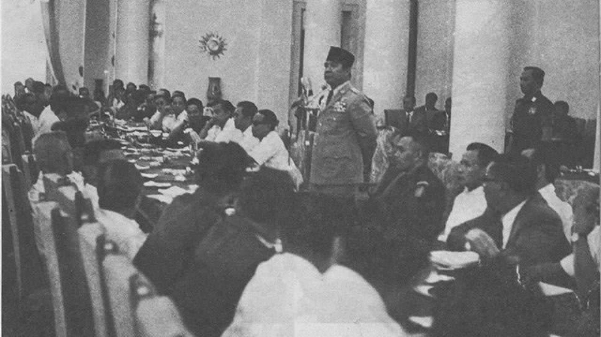
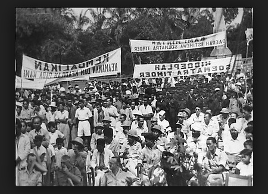
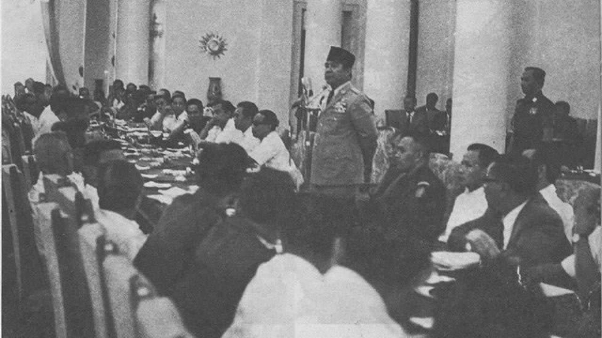
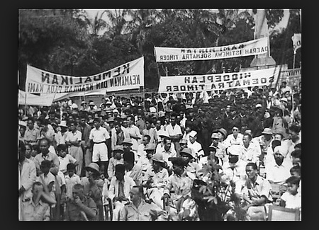

Merupakan sistem demokrasi yang diimplementasikan pada masa-masa akhir pemerintahan yang dipimpin oleh soekarno. Berjalannya demokrasi terpimpin sendiri sebagai sistem pemerintahan, di mana semua kebijakan atau keputusan yang diambil dan dijalankan berpusat kepada satu orang, yaitu kepala pemerintahan atau presiden yang berjabat..
Bermunculan dari adanya kepentingan untuk mempertahankan dan memperkuat kedaulatan nasional serta kemandirian negara dalam berbagai aspek kehidupan, termasuk politik, ekonomi, dan budaya. Serta mengurangi kesenjangan sosial dan ekonomi antara berbagai kelompok dalam masyarakat sehingga mendorong adanya pembangunan ekonomi nasional yang mengurangi ketergantungan terhadap pihak asing dan mempromosikan pengembangan di berbagai industri, juga termasuk pengentasan kemiskinan, pemerataan kesempatan, dan akses adil terhadap sumber daya dan pelayanan publik. Hingga meningkatkan kesejahteraan secara umum dengan meningkatkan standar dan kualitas hidup, mengatasi pengangguran, tersedianya pelayanan kesehatan, dan pendidikan terjangkau,
  
 
Namun bagi pihak-pihak pemerintahan, Kepemimpinan yang utama dan terutama didesentralisasikan dengan presiden yang menjabat pemimpin tersebut memiliki pengaruh dan otoritas yang kuat dalam mengambil keputusan politik dan mengarahkan arah serta kebijakan-kebijakan negara. Karena itu dominasi yang dilakukan cenderung untuk membatasi kebebasan individu dan hak-hak politik melalui pembatasan kebebasan berpendapat, kebebasan pers, dan kebebasan berserikat. Sehingga adanya peran aktif yang dimiliki oleh pemerintahan dalam merencanakan dan mengarahkan pembangunan ekonomi serta mencapai tujuan sosial yang dianggap penting bagi masyarakat.
Partai- partai politik yang mendukung pemimpin yang berkuasa akan memiliki kuasa dominasi yang kuat dalam sistem politik. Partai tersebut umumnya berupa partai tunggal yang mendominasi atau mengontrol jalannya pemerintahan. Mengarahkan dengan adanya kurangnya akuntabilitas karena kendali yang kuat dalam pengambilan keputusan dan kurangnya mekanisme pengawasan independen. Hal ini dapat menyebabkan konsentrasi kekuatan politik dan ekonomi yang tidak sehat, yang dapat mengarah pada penyalahgunaan kekuasaan tanpa konsekuensi yang memadai dan korupsi. Selain itu dominasi berlebihan oleh satu pihak juga dapat menghambat munculnya alternatif politik dan pluralisme dalam sistem politik.